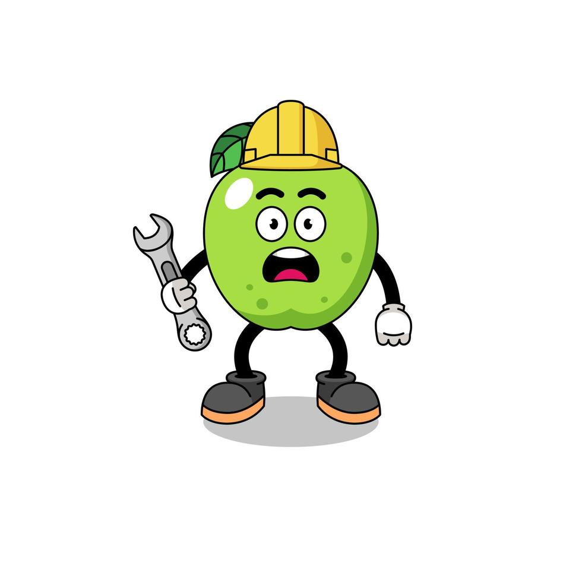

Home
Maçã
História
Ciência
Bens e Saúde
Pratos
Autoria
Opinião
🔍
404 - Algo de errado não está certo - 404
Estamos a enfrentar uns problemas técnicos
Volte para a página
Home
ou outra página através da barra de menu.
